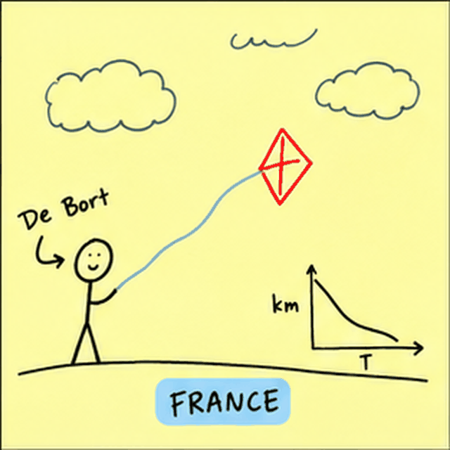

The Discovery of the Stratosphere

The discovery of the stratosphere: a story of misadventure and adaptation. Léon Teisserenc de Bort used kites to measure temperature change with altitude. On one particularly windy day, his kite broke loose, trailing kilometers of wire and disrupting telegraph communications between Rennes and Paris. The timing could hardly have been worse: people were anxiously awaiting news of Alfred Dreyfus’s court-martial in Rennes. France was caught up in a major political scandal, and de Bort’s atmospheric-science experiment interrupted the updates. De Bort turned to unmanned weather balloons. A sandbag slowly leaked ballast as the balloon rose, helping it maintain a constant rate of ascent. A hook would eventually tear open the balloon, letting the remaining fabric act as a parachute, and the instruments fell softly to the ground. An unsuspecting citizen could then return the instrument for a small reward. Scientific data collection, with a little help from whoever happened to be walking by. These balloons reached heights the kites never could. In time (and with height), the balloon measurements showed a temperature inversion, a two-layer atmosphere, a troposphere and a stratosphere, separated by something that would later be coined the tropopause. Sources: George Ohring, “A Most Surprising Discovery” (1964), and Peter Lynch, The Emergence of Numerical Weather Prediction: Richardson’s Dream (2006).